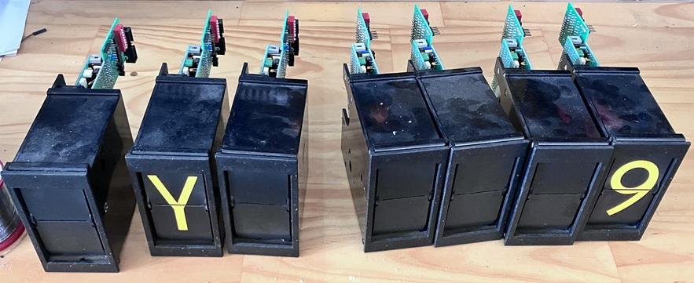
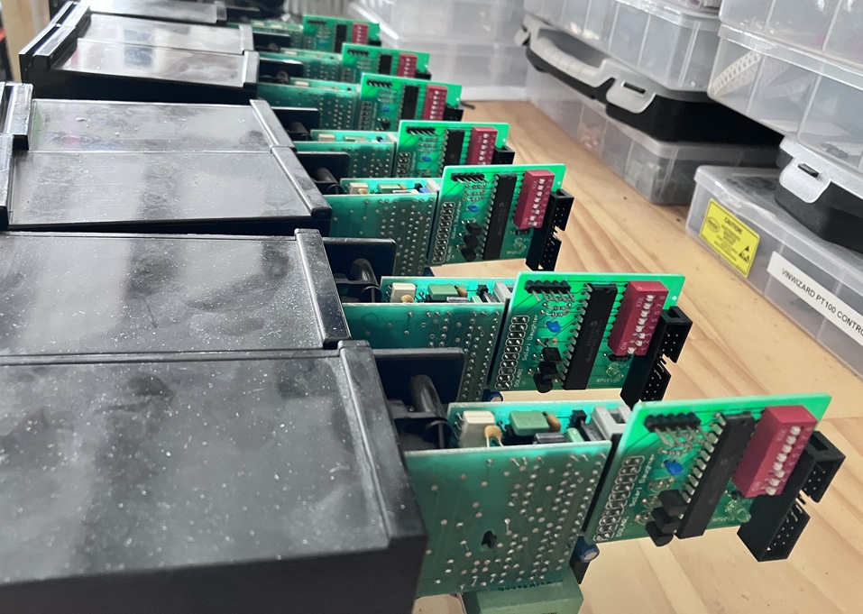
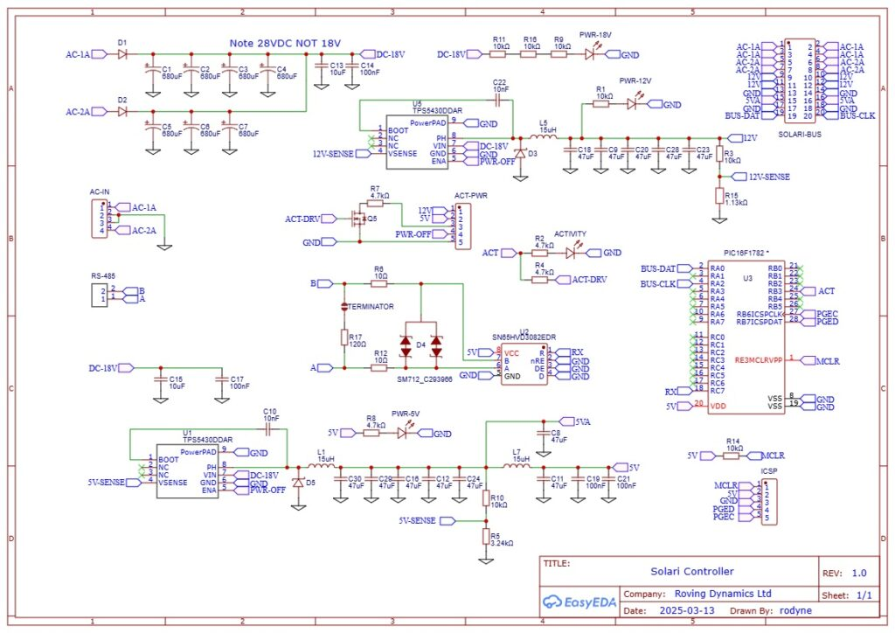
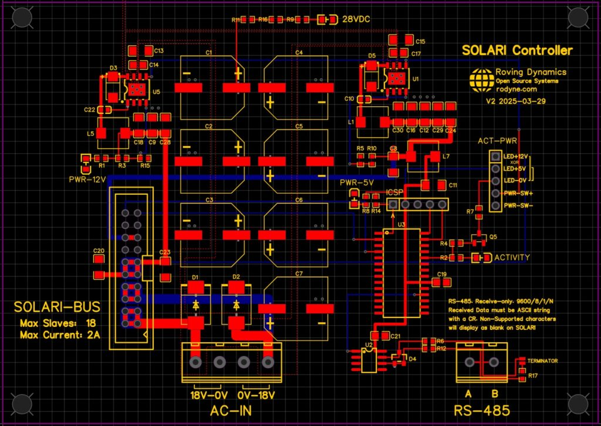

About 13 years ago, before this web site, and back when I used to be called boznz.com, I put out a simple project to reverse engineer some soft-flap display units (brand-name Solari). My clients CEO had bought 20 of them at a charity auction when they were upgrading the flight information boards at Auckland Airport (18 worked!).
I did a rough write up at the time that got featured on hack-a-day and I preserved the basics of the original web page here.

A Sad, Broken, Display 🙁
It was happily sitting pride of place in the cafeteria of my clients 15-Valley winery for those 13 years providing real-time updates to the grape tonnage received, and the occasional funny message, in its own retro-spectacular way. This was until a few weeks ago, when it failed to wake up at the start of vintage.

Actually I was quite surprised it lasted that long given how old and fragile the individual units are, how quick and dirty the whole project was engineered, and how bad an environment it was in. So, as support for vintage was ticking over nicely, and ignoring my usual warranty rules, I got the guys to uninstall it and throw it in the back of my dodgy electric pickup for the bumpy 20KM journey back to my workshop.
After an age with an air compressor and vacuum cleaner, and with the unit fully dismantled in front on me on the bench now, the memories flooded back. I had just returned to electronic engineering in from a 15 year hiatus in IT and network management and my electronics lab at that point consisted of an old radio shack soldering iron, a fluke multimeter, a 5Mhz analog scope, a newly acquired EasyPIC 4 development kit from Mikroelectronika with MikroPascal for PIC and various out of date through-hole components and breadboards, that managed to survive shipping from the UK. All of course in my spare bedroom, so when they guys at Indevin dropped the box of displays on my desk and asked me to “make it work” I was all fired up to give it all a try. I managed to get something knocked-up and working, good enough, at least that a carpenter could mount it all in a neat cabinet and hide the warts.
Fast forward 13 years..

With the unit in pieces I immediately saw the problem, the control board, and four of the units had pretty severe water damage. I say water, but it was more likely beer, wine or a soft drink as it had eaten away at some of the PCB’s and mechanics. But 14 of the display units looked good. The problem was the control board needed replacing and as this was the only time I ever used the MikroPascal compiler for PIC in anger, so it was going to be a new design.
I remember at the time I thought MikroPascal was quite cool, and it was dead simple, solving me the problem of re-learning C. Alas it was a short love affair as my next client insisted I use C and from that point on, so well I just went with the money!

Anyway, armed with the original pascal source code I quickly knocked out a replacement control board and 140 line of (XC8) C which would replicate the functionality. While in the re-design phase, changes were made to convert the input from ethernet to RS485, so the weighs could be directly updated from their SCADA Interface. I reused the original transformer, cables and 14 of the remaining displays and got it all working again, but while it was in pieces I thought I would capture some nicer pictures.

Some Technical Info for the future.

The Control board mainly consists of power-supplies. The two raw 18VAC supplies combining and going directly out to the slave devices for 36VAC total. And two DC supplies, a 12VDC 3A which supplies the Solari slave devices, and a 5VDC 3A which supplies the control logic and the slave daughter boards. The 3A for the 5V is totally overkill, 20 slaves plus the control board draw a tenth of that, but it always good if you can re-use the same components to reduce the pick-n-place component count. The only other real change, apart from the obvious fact we are now using a serial RS485 data input instead of Ethernet, is that the front panel indicator/reset switch actually powers off the 12VDC and 5VDC supplies giving a harder reset. I also re-used another PIC16F1782 from my pile, which now wont go into landfill when I die 🙂
The video shows everything back in place but with a few calibration issues still to fix after dismantling and re-assembling the units (Yes I got the damaged ones working!) There must have been dozens of “Solari Technicians” back in the old days whose only job was to fix and re-calibrate these.. arghhhh!
The one thing of note in the code below is that I have extended the delay between sending packets out to the individual devices; This is to reduce the demand on the 12VDC and 18VAC supplies as the slaves only draw significant power when enabled and ‘flapping’. Moving the delay from 100mS to 600mS will space the demand out, and keep everything less stressed but will take 8 seconds to send out the message and so about 12 seconds to display all 18 digits.
I did not make any changes to the daughter board or its original pascal code. I saw a few minor improvements I could have made but did not see anything that really justified messing with them.
// SOLARI CONTROLLER Using PIC16F1782 https://rodyne.com/?p=1781
#include <xc.h>
#pragma config FOSC = INTOSC // Use internal 1% Oscillator should be good enough
#pragma config CLKOUTEN = OFF
#pragma config FCMEN = ON // osc fail monitor on
#pragma config MCLRE = ON // Used as reset button not IO
#pragma config WDTE = ON // Watchdog timer ON
#pragma config STVREN = ON // reset on stack overflow ON
#pragma config BOREN = ON // reset on stack low voltage
#define BUS_DAT(state) LATAbits.LATA0 = state // 1 = ON, 0 = OFF
#define BUS_CLK(state) LATAbits.LATA2 = state // 1 = ON, 0 = OFF
#define ACT_LED(state) LATBbits.LATB3 = state // 1 = ON, 0 = OFF (Activity LED)
#define _XTAL_FREQ 16000000 // req for the __delay_ms() function to work accurately
#define MAX_DEVICE 18
// The solari devices we use have 40 possible flap positions and there are several
// Solari models with different "Character sets" so be aware if you need to use another type.
const char posn[40] = " _0987654321-/ZYXVUTSRQPONMLKJIHGFEDCBA"; // not used in code but just for info
const char ascii[128] = // map ascii char to its Solari position to simplify code (unsupported chars map to space)
{
0,0,0,0,0,0,0,0,0,0,0,0,0,0,0,0,0,0,0,0,0,0,0,0,0,0,0,0,0,0,0,0,0,0,0,0,0,0,0,0,0,0,0,0,0,
12, /* - (dash) */
0,
13, /* / (forward-slash) */
2,11,10,9,8,7,6,5,4,3, /* 0..9 */
0,0,0,0,0,0,0,
39,38,37,36,35,34,33,32,31,30,29,28,27,26,25,24,23,22,21,20,19,18,17,16,15,14, /* A..Z */
0,0,0,0,
1, /* _ (underscore) */
0,
39,38,37,36,35,34,33,32,31,30,29,28,27,26,25,24,23,22,21,20,19,18,17,16,15,14, /* a..z */
0,0,0,0,0
};
// calibration allows for bad alignment on a unit and allows us to bump the char back
// or fwd. Solaris count backwards so A comes after B just to make it more confusing
const int8_t DefCal[4][MAX_DEVICE] =
{
{ 0,0,-1,0,0,0,0,0,0, 0,0,0,-1,0,0,0,0,0 }, // Offset for CharNo 0..10
{ 0,0,-1,0,0,0,0,0,0, 0,0,0,-1,0,0,0,0,0 }, // Offset for CharNo 11..20
{ 0,0,-1,0,0,0,0,0,0, 0,0,0,-1,0,0,0,0,0 }, // Offset for CharNo 21..30
{ 0,0,-1,0,0,0,0,0,0, 0,0,0,-1,0,0,0,0,0 } // Offset for CharNo 31+
};
volatile int8_t calibration[4][MAX_DEVICE]; // calibration offsets in case solari is out, 0, -1, or +1 allowed
volatile uint8_t SerBuf[MAX_DEVICE+1]; // allow for trailing CR on string
volatile uint8_t RxBufPtr=0, RxTimeout=0, LastChar=0, tick=0;
void __interrupt() ProcessINT() // UART RXD interrupt (ON RC7) and TIMER
{
if(RCIF) // when serial char received
{
LastChar = RCREG;
if(RxBufPtr<MAX_DEVICE) SerBuf[RxBufPtr++] = LastChar;
RxTimeout=250; // start data timeout 250mS
RCIF=0; // flag RX interrupt processed
}
if(TMR0IF) // approx every 1mS
{
if(RxTimeout>1) RxTimeout--; // decrement to 1
TMR0IF=0; // flag interrupt processed
}
}
void delay_us(uint8_t us) // hard coded for 16Mhz (approx is OK)
{
while(us--)
{
asm("NOP"); asm("NOP"); asm("NOP"); asm("NOP");
asm("NOP"); asm("NOP"); asm("NOP"); asm("NOP");
}
}
void main()
{
int8_t DevNo, i, SolariCharNo;
uint16_t mask, data;
OSCCON = 0b01111010; // 16Mhz Internal OSC
WDTCON = 0b00010101; // WDT ON timeout 4 seconds inactivity
// I/O Ports
TRISA = 0b00000000; // Port A Direction reg All outputs
ANSELA = 0b00000000; // Port A Analog config No analog
LATA = 0b00000000; // Port A Initial state All OFF
TRISB = 0b00000000; // Port B All output
ANSELB = 0b00000000; // Port B All digital
LATB = 0b00000000; // all off
TRISC = 0b10000000; // Port C All outputs except RC7 which is RXD
LATC = 0b00000000; //
ACT_LED(0);
BUS_CLK(0);
BUS_DAT(0);
BRG16 = 0; // Set up UART 9600/8/N/1 Async (CREN=1, SYNC=0, SPEN=1)
SPBRG = 25;
SPEN = 1; // enable serial
RCIE = 1; // enable UART1 interrupt
PEIE = 1; // Enable Peripheral interrupt
OPTION_REG = 0b10000011; // Set up TIMER0 for 1mS interrupt 16M/4/16/256 = 976Hz
TMR0IE = 1; // enable timer 0 interrupt
for(DevNo=0;DevNo<4; DevNo++)
for(i=0;i<MAX_DEVICE; i++)
{
calibration[DevNo][i]=DefCal[DevNo][i]; // copy default calibration for each slave
}
while(1)
{
ACT_LED(1); // Default is on, off while processing
CREN=0; // clear any rec errors (if any)
RxBufPtr=0; // clear receive buffer
LastChar=0; // reset last char so we dont re-trigger
RxTimeout=0;// reset the timeout
CREN=1; // re-enable receive cct (with any errors cleared)
GIE=1; // turn interrupts back ON
while(RxTimeout!=1 && LastChar!=0x13) // wait for serial data event
{
CLRWDT();
}
ACT_LED(0); // change to show activity
GIE=0; // turn off ALL interrupts while we process the message buffer
if(LastChar==0x13) // Got VALID DATA + CR
{
for(DevNo=0; DevNo<MAX_DEVICE; DevNo++)
{
// converting ASCII char received in buffer to a solari position to send to device
SolariCharNo = (int8_t) ascii[SerBuf[DevNo]]; // look up the character position
i=0; // default calibration set to use for chars 0..10
if(SolariCharNo>10) i=1; // calibration set to use for chars 11..20
if(SolariCharNo>20) i=2; // calibration set to use for chars 21..30
if(SolariCharNo>30) i=3; // calibration set to use for chars 31..40
SolariCharNo = SolariCharNo + calibration[i][DevNo]; // adjust back or forward if required to fix misaligned chars
if(SolariCharNo>40) SolariCharNo=0; // cannot have SolariNo more that 40 so wrap around to 0
if(SolariCharNo<0) SolariCharNo=40; // cannot have SolariNo less than 0 so wrap around to 40
data = (uint16_t) ((SolariCharNo*256) + (DevNo+1)); // slave written in pascal so device numbering starts from 1 not 0
if(DevNo%2) ACT_LED(0); else ACT_LED(1); // flash LED during activity
mask = 0x0001;
for(i=0; i<16; i++) // clock out the string to the device chain
{
CLRWDT();
if(data & mask) BUS_DAT(1); else BUS_DAT(0);
delay_us(10);
BUS_CLK(1);
mask = mask << 1;
delay_us(10);
BUS_CLK(0);
}
__delay_ms(600); // bigger delay between chars so they don't all flap at the same time (too many amps!)
}
}
}
}A better view of the PCB is here. The only error I had was I added a pull-up resistor R13 in the original version 1 board on the TPS5430 ENA to Vin when it needs to float to enable and grounded to sleep, the design I have now removed this and works fine.
